WORK・智慧移動
在資源有限的實務環境下導入服務設計思維與 UX 研究，系統性梳理 GoSmart 共享車的服務斷鏈。提出 10 項具落地性之創新提案，並透過高擬真原型完成實地場域驗證。
專案對象
格上 GoSmart
專案時間
2024–2026
專案類型
App/實體設計/服務設計
負責內容
分析研究、設計策略、UI設計
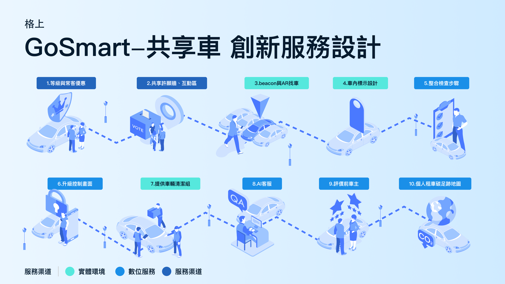
十項創新服務策略總覽，依服務渠道分色標示。
成果與結論
貫徹雙鑽石服務設計流程：從前期深度調研、收斂創新服務策略，到邀請用戶進行實地原型驗證；最終推動核心方案落地上線，有效降低取還車認知負荷與流程中斷。
項
創新服務策略
項
確認實際落地
位
受測者實地驗證
＊十項策略源自 42 項初探發散構想，經 IDEO 三要素（Desirability／Feasibility／Viability）與 SEMs 策略體驗模組收斂而成。
本專案重點
隨著智慧交通（MaaS）普及，自助租還車成為城市移動常態。本專案針對 GoSmart 共享車，在有限資源下系統性梳理內外部服務落差，提出具落地可行性的創新解方與高擬真原型驗證。
本專案設計流程
從業者訪談與負評分析切入，透過問卷剖析用戶輪廓；將發散構想收斂為 10 項創新服務策略，並逐一落地為介面規格，最終以高擬真原型完成實地場域驗證。
業者訪談與 157 筆負評分析，梳理用戶流失的 7 大核心範疇。
問卷調查交叉分析使用頻次與服務期望，劃分四種用戶輪廓。
以服務藍圖與顧客旅程地圖為基礎，從 42 項構想收斂至十項策略。
逐一定義十項策略對應的介面、服務與實體場域設計細節。
高擬真實體場域測試，捕捉量化數據看不到的真實用戶心理。
問題背景與洞察（Why）
業者訪談與 157 筆負評分析顯示，用戶流失並非單點功能缺失，而是集中於取還車流程、客服支持與資格審核等 7 大核心範疇。
深度訪談 3 位來自 GoSmart 與 iRent 的產業專家（涵蓋決策者、維運端與產品經理），從規劃、營運與執行多維度獲取前線痛點。
蒐集雙平台商店 157 筆有效負評，採內容分析法萃取 21 項次要議題，並收斂為 7 大核心改善範疇。
用戶負評 7 大核心範疇
| 核心範疇 | 說明 |
|---|---|
| 取還車流程 | 取車、還車操作步驟繁瑣，資訊分散於多個頁面 |
| 客戶服務支持 | 客服回應不即時，問題無法快速獲得解答 |
| 資格審核流程 | 會員審核與資料查驗流程冗長 |
| 付款過程 | 費用計算不透明，收費項目不易理解 |
| 站點和車輛數量 | 特定時段或區域車輛／站點供給不足 |
| 停權處理問題 | 違規停權機制與申訴管道不明確 |
| 其他 | Icon 設計、通知、軟體更新等次要議題 |
使用者理解（Who）
交叉分析使用頻次與服務期望後發現，體驗型與休閒型等低頻族群占比高達 85.9%——多數用戶皆屬偶發使用者，「每一次用車的信任感」才是決定品牌留存的關鍵。
透過問卷劃分出高頻、實惠、休閒、體驗 4 種用戶輪廓與 11 群代表人物，分別梳理痛點、癢點與爽點，進而轉化為 HMW 設計提問：當多數人僅為偶發用車時，服務如何建立無摩擦的初次體驗與長期回訪信任？
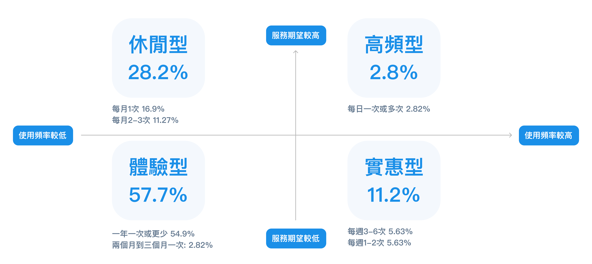
問卷調查顯示，體驗型與休閒型兩種低頻族群合計占比達 85.9%，高頻型僅占 2.8%。
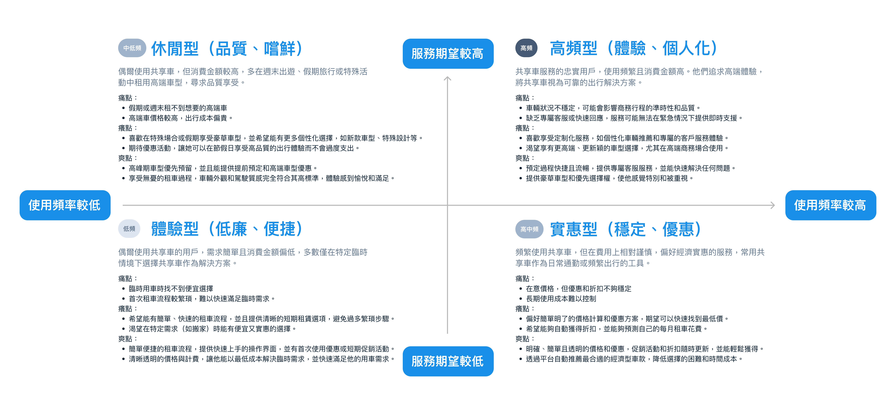
使用頻次 × 服務期望象限圖，每種輪廓皆含痛點／癢點／爽點三層描述。
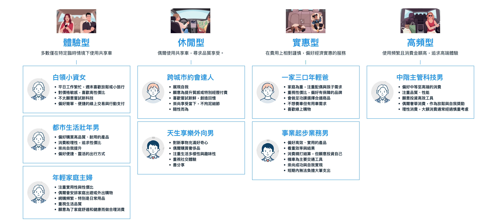
每種輪廓再細分出具體的代表族群，例如高頻型對應「中階主管科技男」。
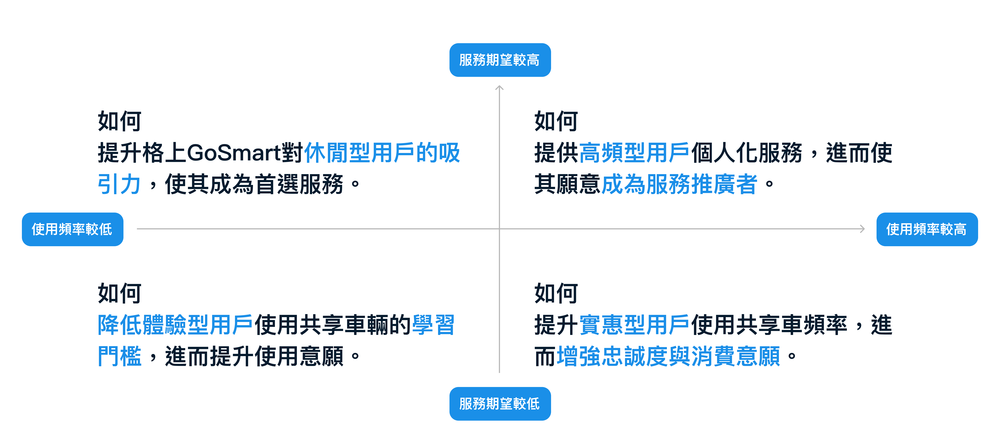
針對每種輪廓分別定義 HMW 設計提問，最終收斂為群組三的核心命題。
目標與方法（What / How）
服務藍圖揭露前後台斷鏈，旅程地圖精準定位用車情緒低谷；兩者交叉比對後確立核心命題：如何透過極致便利與服務信任感，讓 GoSmart 成為共享車首選？
服務藍圖
由實體證據至後台系統拆解 5 大層次。盤點發現：後台調度與車況清潔資訊未能即時同步至前台，是導致「找車困難」與「異常還車焦慮」的核心斷點。
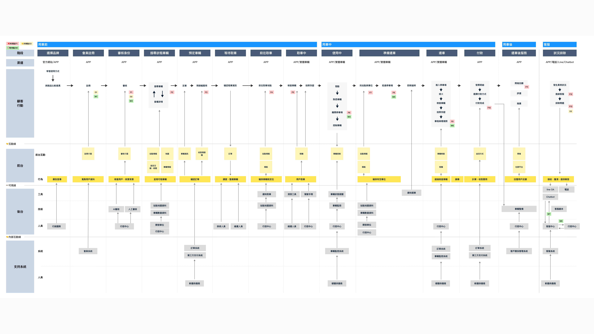
服務藍圖（Service Blueprint），完整拆解用車前、中、後的顧客行動、前台互動、後台支援與系統串接。
顧客旅程地圖
串聯用車前中後歷程，梳理各接觸點情緒起伏。精準定位三大體驗低谷：車況責任轉嫁、尋車空間迷失、還車孤立無援，作為 42 項發散構想的直接切入點。
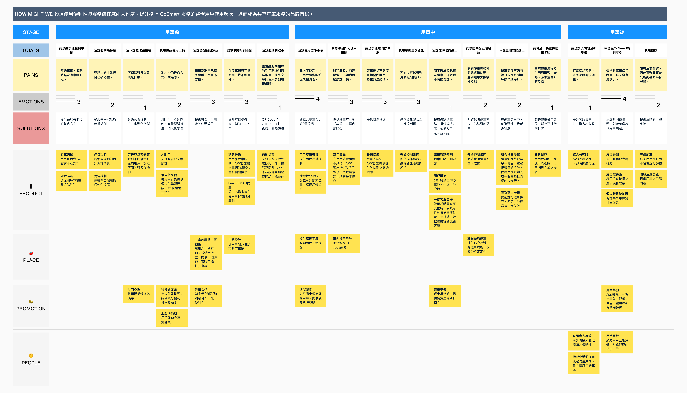
顧客旅程地圖，橫軸為用車前／中／後三大歷程，縱軸依序為目標、痛點、情緒、解方，並依 4P 觸點展開對應構想。
HMW…
如何透過提升服務便利性與信任感，
讓 GoSmart 成為共享車品牌的首選？
從發散到收斂
42
初探發散構想
4P 觸點 × 用車前中後
37
IDEO 三要素篩選
Desirability／Feasibility／Viability
10
SEMs 收斂
最終十項創新服務策略
十項創新服務策略總覽
收斂後的十項策略橫跨產品（Product）、場域（Place）、推廣（Promotion）、人物（People）四個觸點，全面覆蓋用車前、中、後三大歷程。
S01 等級與常客優惠
透過徽章晉級與預授權動態減免，建立階梯式專屬回饋，激勵用戶長期回訪與黏著度。
依據累積次數與用車行為劃分等級（初階至尊享）。
個人頁直觀呈現晉級條件與累點進度條。
高信譽用戶享有較低的保證金預授權門檻，減輕資金占用。
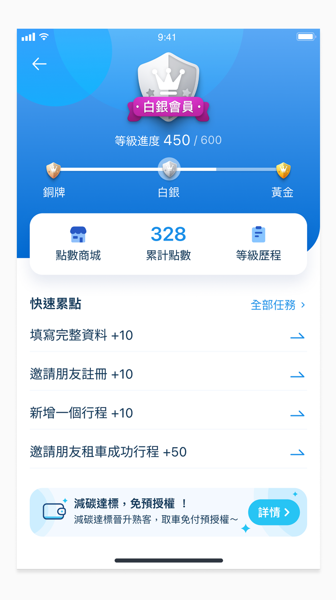
S02 共享許願牆、互動區
由用戶主動發起站點需求，以熱度運算評估設站可行性，達成服務共創與精準拓點。
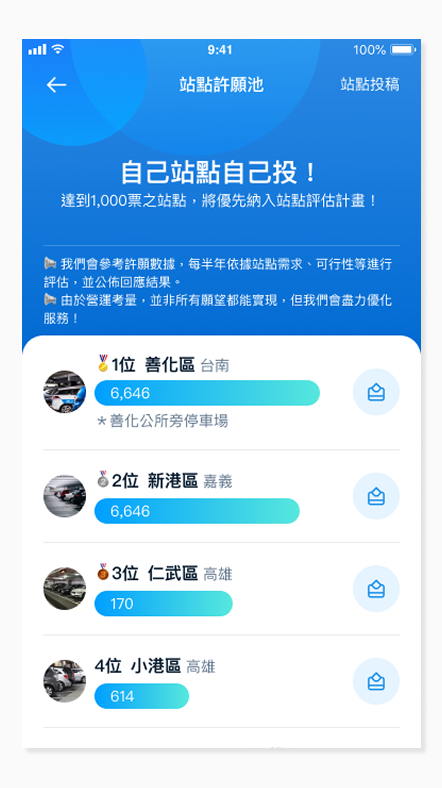
用戶自訂期待站點或車型並附註情境（如社區通勤）。
公開許願池供其他用戶投票支持，提高設站優先級。
達標成案後優先回饋早鳥優惠券給參與連署之用戶。
S03 Beacon 與 AR 找車
結合實體 Beacon 定位與 AR 視角，補足室內停車場感知盲區，打造直覺尋車導引。
相機畫面直接疊加方向箭頭與剩餘公尺數。
於大型多層地下停車場提供連續性步行導航。
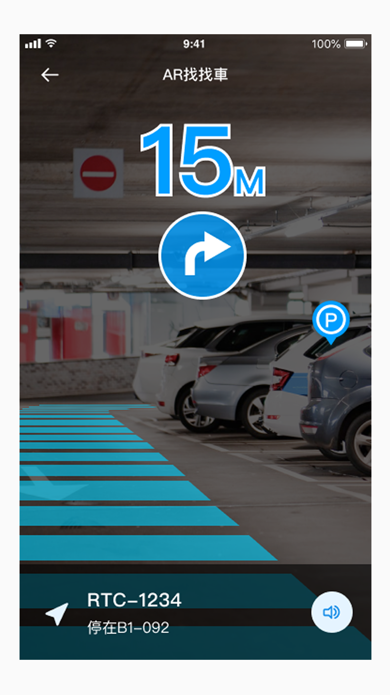
S04 車內標示設計
車內導入直覺標示與教學 QR Code，降低陌生車況操作摩擦，提升行車安全。
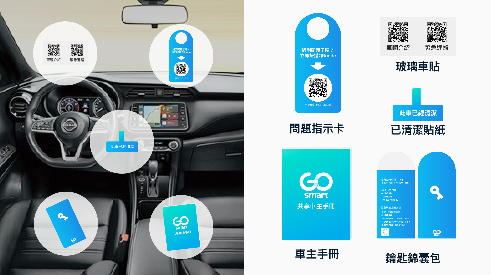
關鍵操作區塊配置淺顯圖示與快速排障 QR Code。
以一致的車內視覺語彙傳遞專業、安心的品牌感。
掃描認識車輛功能即可獲取點數，引導主動學習。
S05 整合檢查步驟
將還車審驗流程整合至單一頁面，大幅降低認知負荷與還車恐慌。
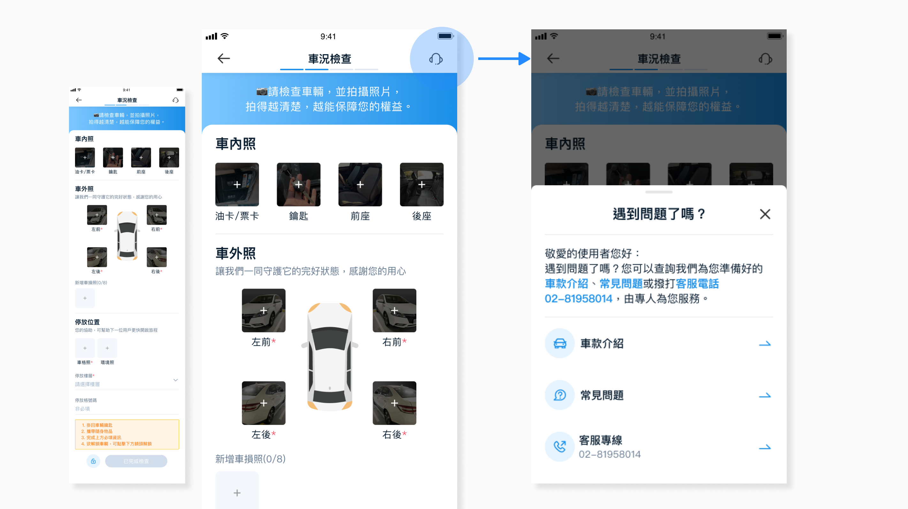
剔除多層級換頁，所有驗證與拍照收攏於同一視野。
步驟狀態明確標示，避免漏填或重複操作。
如遇門鎖未上等情境，系統主動提供即刻處置方案。
S06 升級控制畫面
主動預測用車情境與即時狀態，提供清晰的可預期性與安心框架。
取車時提醒驗車，行車中主動通報油/電量與路況。
儀表即時顯示剩餘電量、胎壓與重要租車資訊。
行駛時間與里程費用透明連動，消費無隱藏。
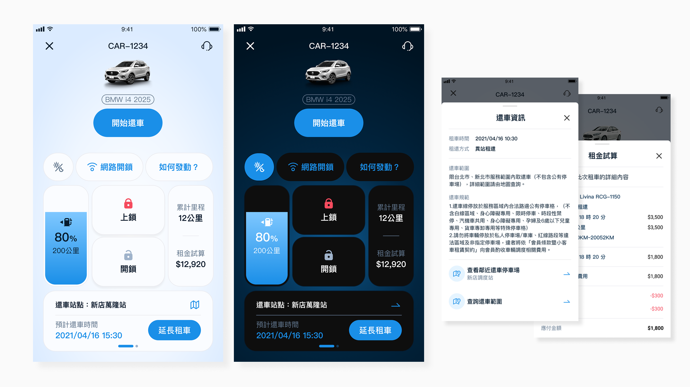
S07 提供車輛清潔組
車內配置簡易清潔包並結合回饋機制，驅動互助維持整潔的社群良性循環。
回報清潔前後照片即可兌換用車折抵金或優惠。
提升用戶身為「共同守護者」而非單純使用者的心態。
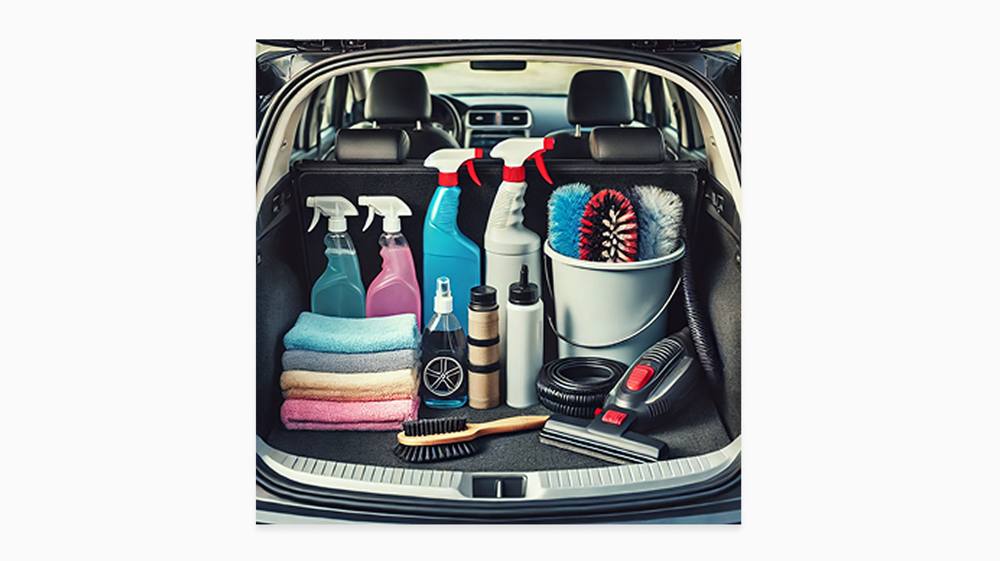
S08 AI 客服
結合生成式 AI 進行即時問題分流與排障指引，大幅縮短前線等待延遲。
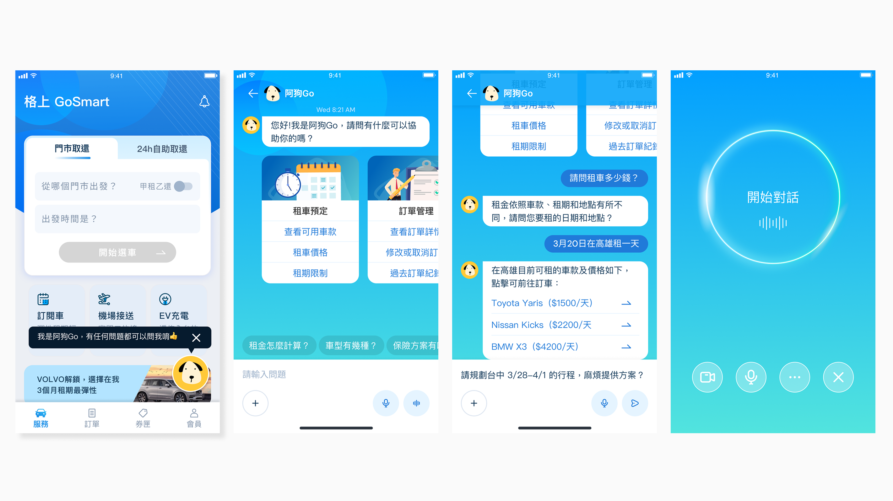
自動判斷技術故障、帳務或事故，精準遞送對應窗口。
根據時間與用車目的，推薦合適站點與周邊用車路徑。
S09 評價前車主
建立雙向互評與信用機制，透過制度制約不當習慣，維持共享品質。
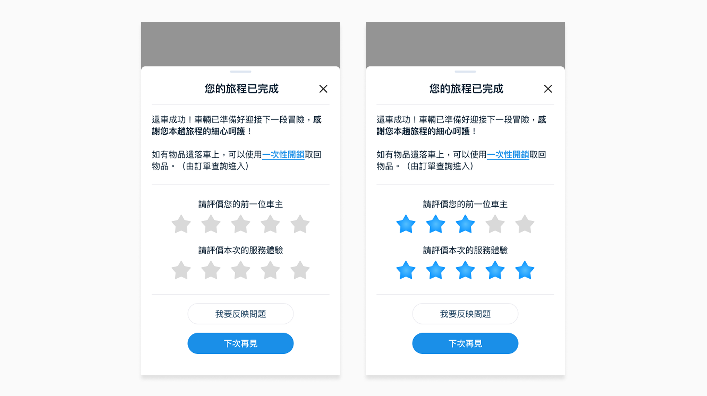
用戶與平台雙向回饋，落實共享責任感。
依照清潔習慣與規範遵守率生成信用等級，享有差別福利。
S10 個人租車碳足跡地圖
將環保減碳具象化為個人儀表與故事，賦予移動行為永續價值與成就感。
將累積公里數自動換算為等效植樹或碳減排指標。
展示公共共享對城市綠化的長期正面影響。
透過趣味減碳排行與每月挑戰，提升社群參與。
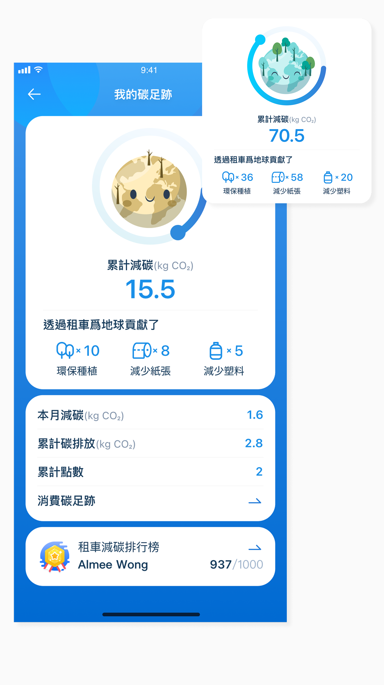
原型驗證
真實場域捕捉到用戶面對社群共創機制時的真實心理防衛—這是量化數據看不到的洞察。
受測者背景（U1–U9）
| 編號 | 年齡 | 使用頻率 | 分類 |
|---|---|---|---|
| U1 | 30 | 一年 3 次 | 輕度 |
| U2 | 42 | 一年 12 次 | 中度 |
| U3 | 40 | 一年 480 次 | 重度 |
| U4 | 31 | 一年 144 次 | 重度 |
| U5 | 35 | 一年 4 次 | 輕度 |
| U6 | 29 | 一年 5 次 | 輕度 |
| U7 | 26 | 一年 5 次 | 輕度 |
| U8 | 42 | 一年 12 次 | 中度 |
| U9 | 30 | 一年 6 次 | 中度 |
測試方法
於私人停車場實體車輛與場景佈置，交叉應用跟述法（Shadowing）、放聲思考法（Think Aloud）與深度訪談法（In-depth Interview），全面捕捉使用者的行為與心理歷程。
關鍵發現
實地場域測試捕捉到用戶在面對共創機制（如清潔組）時的「責任界限」與「損失規避」防衛心理。這證實了原型測試的價值不僅在於介面易用性，更在於及早識別違背心理模型的潛在研發風險。
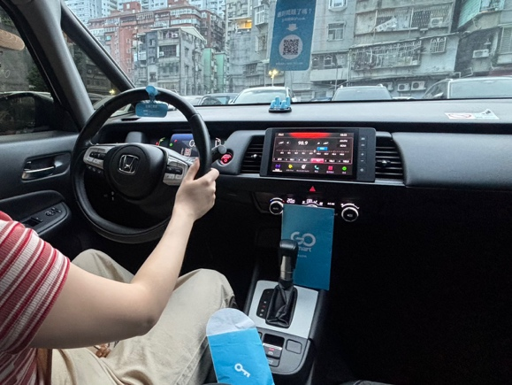
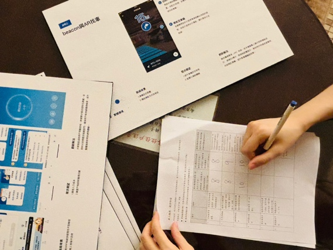
待確認議題
對共享車營運商的策略建議
十項提案中已有三項正式上線。相較於單點式的功能修補，這是我在專案落地過程中，驗證出對共享車產業真正具有影響力的三個原則。
Design
◆
服務設計並非視覺包裝，而是體驗轉型核心。決定用戶回訪留存的，是虛實交織的端到端體驗，而非單純的車隊規模。
Platform
◆
將用戶從單向消費者轉化為「生態系維護夥伴」，是共享載具邁向永續平台的關鍵一步。
Resilience
◆
系統異常時，才是品牌被記住的時刻。在用戶最無助時提供清晰的容錯支持，才能真正鞏固信任。